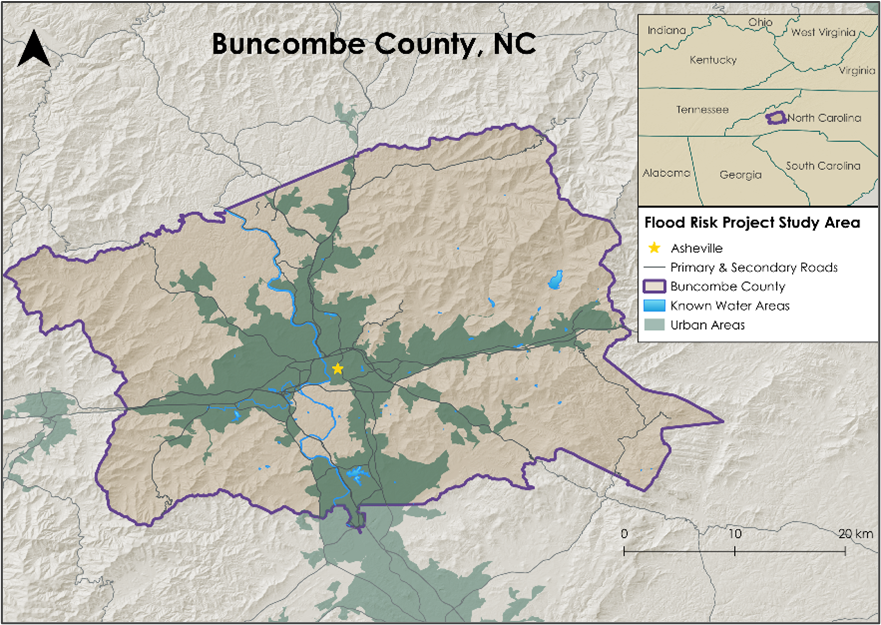
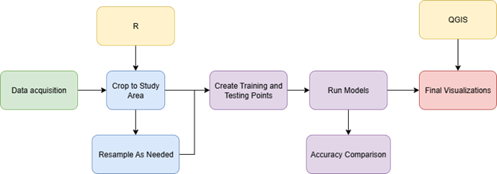
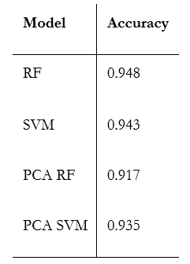
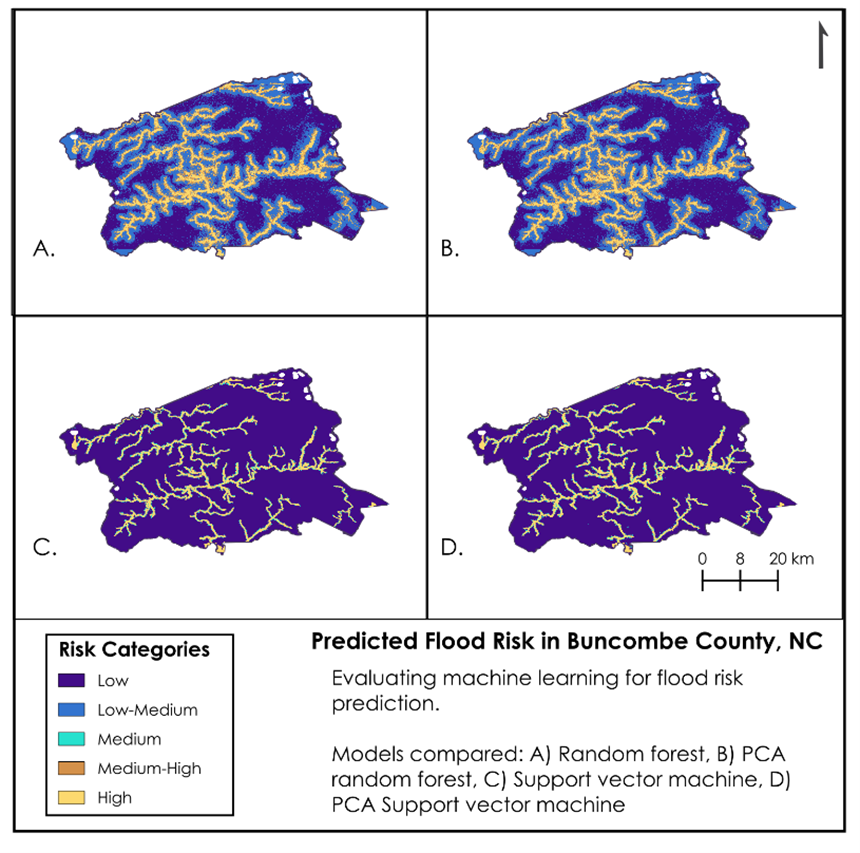
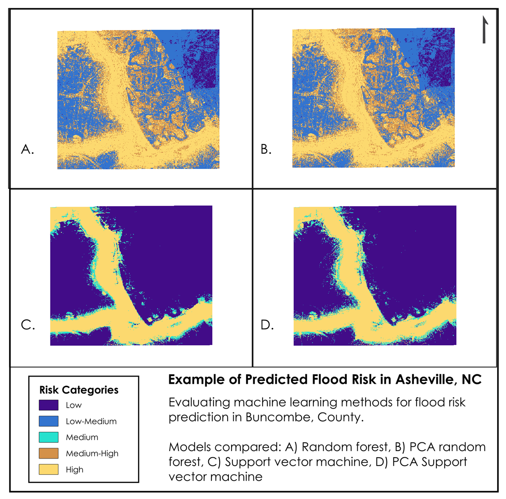

Flood Risk Analysis
Assessing machine learning methods for flood risk identification in Buncombe County, North Carolina
Project Overview & Study Area: With natural disasters increasing in frequency and intensity, it is critically important to predict and accurately model the extent and effects of disasters such as earthquakes, wildfires, and floods (Tellman et al., 2021). Flooding in particular has caused extremely ruinous effects in recent years, with examples in Texas, New York, and North Carolina highlighting the damage associated with floods (Cooper 2024; Krueger 2025; TDEM 2025). To better prepare and potentially protect against the devastating effects of flooding, landowners, municipalities, and other decision-makers need adaptable and actionable flood prediction methods that they can incorporate into their hazard mitigation toolkits. Thus, we aimed to produce a concise and flexible workflow for ingesting environmental variables, leveraging multiple machine learning models, and outputting areas of greatest flood risk probability.

For building our workflow and testing our models, we used Buncombe County, North Carolina as our study area (Figure 1). Buncombe County was heavily impacted by the flooding events initiated by Hurricane Helene in the fall of 2024, and therefore presented a known source of truth for our flood prediction efforts (Hagen et al., 2025). Buncombe County is approximately 656 square miles in size and is home to a population of around 279,210 individuals (United States Census Bureau 2025).
Methods: Based on existing literature, we selected the following variables to include in our models: Topographic Wetness Index (TWI), distance to streams (DTS), Normalized Difference Vegetation Index (NDVI) from Landsat 9 OLI-2, National Landcover Database (NLCD) data, and social vulnerability from the U.S. Census Bureau. For our flood risk layer, we used the National Flood Hazard Layer (NFHL) 100-year floodplain data from FEMA, which we also used to create and incorporate a 1 km buffer area. For modeling, we compared random forest (RF) and support vector machine (SVM), as well as conducted a principal component analysis (PCA) to fine-tune the variable inputs for each model.
We read in our variables to R and then cropped and resampled all input data using the terra and raster packages. Following, we created a raster stack with our variables and converted it to a data frame. As part of this process, we generated a similar stack that contained only the explanatory variables, which we then used in our PCA. Prior to running our models, we used a subsample of the data to produce training and testing points. Finally, we ran both classification and probability variations of our RF and SVM models. For visualization purposes, we used QGIS to produce maps of all model outputs (Figure 2).

Results & Discussion: Our workflow revealed that our tested models had relatively similar accuracies to one another (Table 1).

The RF model produced the highest accuracy, while the PCA-adjusted version yielded the lowest reported accuracy. All models performed relatively similarly in terms of identifying "no flood" and "yes flood" pixels. When attempting to predict probability instead of binary classification, it appears that the RF model performed the best.
In visualizing the predicted flood risk areas, we found that both the RF and PCA RF models identified flood risk areas at a higher granularity. The SVM and PCA SVM, on the other hand, produced stark contrasts between high predicted flood risk and low likelihood of flood risk (Figure 3 & 4).


By incorporating multiple machine learning models into our workflow, we are able to provide a spectrum of results, rather than a single predicted outcome. Our results ideally can be replicated and applied to any study area, with the results yielding usable information that practioners and those with subject matter and local knowledge can apply directly to flood hazard mitigation efforts.
Check Out Our Repository: Flood Risk Github
Tools Used: R, QGIS, GEE
Keywords: Flood Risk, Random Forest, Support Vector Machine, Machine Learning, Remote Sensing, GIS
Project Contributors: Katie Miller (SVM, code structure and refinement, github repository management), Truman Anarella (PCA, data acquisition, cropping and resampling), and Maya Hall (random forest, code refinement, visualizations and report writing)
References
- Cooper, Roy. (2024). Hurricane Helene Recovery Recommendations Preliminary Damage and Needs Assessment. https://www.osbm.nc.gov/hurricane-helene-dna/open
- Hagen, A. B., Cangialosi, J. P., Chenard, M., Alaka, L., & Delgado, S. (2025, April 8). Hurricane Helene. National Hurricane Center Tropical Cyclone Report: Hurricane Helene. https://www.nhc.noaa.gov/data/tcr/AL092024_Helene.pdf
- Krueger, A. (2025, September 6). Rain anxiety follows a summer of tragic flash floods - The New York Times. https://www.nytimes.com/2025/09/06/style/rain-flash-flood-anxiety.html
- TDEM (Texas Division of Emergency Management). (2025). July flooding. https://tdem.texas.gov/disasters/july-flooding-25-0026
- Tellman, B., Sullivan, J. A., Kuhn, C., Kettner, A. J., Doyle, C. S., Brakenridge, G. R., Erickson, T. A., & Slayback, D. A. (2021). Satellite imaging reveals increased proportion of population exposed to floods. Nature, 596, 80-81. https://doi.org/10.1038/s41586-021-03695-w
- United States Census Bureau (2025, July 17). Buncombe County, North Carolina Census Bureau Profile. https://data.census.gov/profile/Buncombe_County,_North_Carolina?g=050XX00US37021